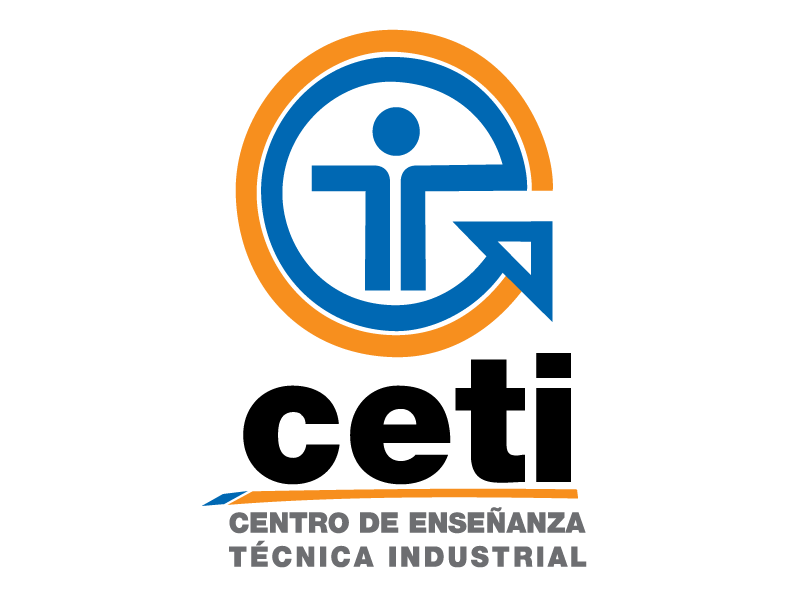

Resumen: del repaso de EIGRP en IPv4 a la configuración y verificación de EIGRP para IPv6 en routers Cisco.

Centro de Enseñanza Técnica Industrial · Guadalajara
Explicar cómo se configura y se verifica EIGRP para IPv6 en routers Cisco, partiendo de lo que ya vimos de EIGRP en IPv4 y usando los comandos del material de clase.
Fundamentos de EIGRP: DUAL, métrica, distancia administrativa y multicast.
Diap. 3
Qué cambia en IPv6: FF02::A, direcciones link-local y configuración por interfaz.
Diap. 4 y 5
Routing IPv6, el proceso ipv6 router eigrp 1 y ipv6 eigrp 1 por interfaz.
Diap. 6, 7, 8 y 10
Comandos show ipv6 eigrp … para confirmar vecinos, topología y rutas.
Diap. 9, 10 y 11
Errores comunes y buenas prácticas para que la red converja a la primera.
Diap. 12
Protocolo de Cisco (publicado como RFC 7868). Conoce rutas por sus vecinos, pero con actualizaciones parciales y limitadas, solo cuando hay cambios.
Calcula el sucesor (mejor ruta) y el sucesor factible (respaldo sin bucles) para converger rápido.
90 rutas internas · 170 rutas externas (redistribuidas) · 5 rutas resumidas.
Dirección a la que envía Hello y actualizaciones en IPv4. Viaja como protocolo IP 88 y usa RTP para la entrega confiable.
Hello · Update · Query · Reply · Ack. Los Hello descubren y mantienen a los vecinos.
Conserva DUAL, la métrica y la AD 90 / 170, pero corre como un proceso independiente del de IPv4.
Equivale a 224.0.0.10: «todos los routers EIGRP» del enlace. El prefijo FF02 indica alcance de enlace local.
Los mensajes salen de la dirección link-local de la interfaz; el vecino y el siguiente salto de las rutas son link-local.
Fijar la link-local a mano facilita leer las tablas: ipv6 address fe80::1 link-local
| Aspecto | EIGRP para IPv4 | EIGRP para IPv6 |
|---|---|---|
| Crear el proceso | router eigrp 1 | ipv6 router eigrp 1 |
| Anunciar redes | network 172.16.1.0 0.0.0.255 | ipv6 eigrp 1 en cada interfaz (no se usa network) |
| Routing previo | IPv4 se enruta por defecto | Obligatorio ipv6 unicast-routing |
| Router-ID | 32 bits; si no se asigna, se toma de una IPv4 | 32 bits (formato IPv4); manual si el router no tiene IPv4 |
| Estado inicial | Activo al configurarlo | Puede iniciar apagado → no shutdown |
| Multicast | 224.0.0.10 | FF02::A |
| Vecino / siguiente salto | IPv4 de la interfaz | Link-local FE80::/10 |
| Verificación | show ip eigrp … | show ipv6 eigrp … |
Se conservan: DUAL, la métrica (ancho de banda + retardo), la AD 90 / 170, el número de AS y el protocolo 88.
R1> enable R1# configure terminal R1(config)# ipv6 unicast-routing R1(config)# end R1# show running-config | include unicast ipv6 unicast-routing
Por defecto un router Cisco no reenvía tráfico IPv6: puede tener direcciones IPv6, pero no actúa como router IPv6.
IOS rechaza ipv6 router eigrp 1 (el routing IPv6 no está habilitado) y no se intercambian rutas.
Una sola vez, en configuración global, en cada router: R1, R2 y R3.
R1(config)# ipv6 router eigrp 1 ① R1(config-rtr)# no shutdown ② R1(config-rtr)# router-id 1.1.1.1 ③
① Crea el proceso. El 1 es el número de sistema autónomo (AS): debe ser igual en todos los routers. El prompt cambia a (config-rtr).
② En las versiones de IOS del curso el proceso de EIGRP para IPv6 se crea apagado; sin no shutdown no envía Hello ni forma vecinos.
③ ID de 32 bits escrita como IPv4. Identifica al router (no es una dirección enrutable) y debe ser única. Es obligatoria si el router no tiene IPv4.
Comando tomado del PDF de clase. En algunas versiones de IOS se escribe eigrp router-id 1.1.1.1.
R1(config)# interface g0/0 R1(config-if)# ipv6 eigrp 1 R1(config-if)# interface s0/0/0 R1(config-if)# ipv6 eigrp 1 R1(config-if)# interface s0/0/1 R1(config-if)# ipv6 eigrp 1 R1(config-if)# ipv6 router eigrp 1 R1(config-rtr)# passive-interface g0/0
En IPv6 no hay network: cada interfaz se une al proceso con ipv6 eigrp 1, y su red se anuncia.
El número (1) debe coincidir en R1, R2 y R3. Con un AS distinto no se forman vecinos.
passive-interface deja de enviar Hello hacia la LAN, pero su red se sigue anunciando.
| Comando | Qué confirma | Qué buscar en la salida |
|---|---|---|
show ipv6 eigrp neighbors | Que se formaron las adyacencias | Una entrada por vecino con su link-local (FE80::2…) y la interfaz local; Q Cnt en 0 |
show ipv6 route eigrp | Las rutas aprendidas por EIGRP | Código D, distancia [90/métrica] y siguiente salto link-local |
show ipv6 eigrp topology | La tabla de topología de DUAL | Sucesores y sucesores factibles con su FD y distancia reportada |
show ipv6 protocols | Los parámetros del proceso | Número de AS, router-id, valores K e interfaces (incluidas las pasivas) |
show ipv6 eigrp interfaces | Las interfaces que participan | Que aparezcan las interfaces esperadas y su número de vecinos (Peers) |
show ipv6 eigrp traffic | El intercambio de paquetes EIGRP | Contadores de Hello, Update, Query, Reply y Ack que van aumentando |
R1(config)# ipv6 unicast-routing R1(config)# ipv6 router eigrp 1 R1(config-rtr)# router-id 1.1.1.1 R1(config-rtr)# no shutdown R1(config-rtr)# passive-interface g0/0 R1(config-rtr)# interface g0/0 R1(config-if)# ipv6 address 2001:DB8:ACAD:1::1/64 R1(config-if)# ipv6 address fe80::1 link-local R1(config-if)# ipv6 eigrp 1 R1(config-if)# no shutdown R1(config-if)# interface s0/0/0 R1(config-if)# ipv6 address 2001:DB8:ACAD:12::1/64 R1(config-if)# ipv6 address fe80::1 link-local R1(config-if)# ipv6 eigrp 1 R1(config-if)# no shutdown R1(config-if)# interface s0/0/1 R1(config-if)# ipv6 address 2001:DB8:ACAD:13::1/64 R1(config-if)# ipv6 address fe80::1 link-local R1(config-if)# ipv6 eigrp 1 R1(config-if)# no shutdown
R2 y R3 se configuran igual con su router-id (2.2.2.2 / 3.3.3.3), su link-local (FE80::2 / FE80::3) y sus subredes. En el extremo DCE de cada serial se agrega clock rate (requisito físico, no de EIGRP).
R1# show ipv6 eigrp neighbors EIGRP-IPv6 Neighbors for AS(1) H Address Interface Hold Uptime SRTT RTO Q Seq (sec) (ms) Cnt Num 1 Link-local address: Se0/0/1 12 00:04:21 40 240 0 7 FE80::3 0 Link-local address: Se0/0/0 13 00:05:02 36 216 0 8 FE80::2
| Configuración | Propósito |
|---|---|
ipv6 unicast-routing | Habilita el routing IPv6 en cada router. |
ipv6 router eigrp 1 | Configura el routing EIGRP para IPv6 (AS 1). |
no shutdown · router-id 1.1.1.1 | Activa el proceso y asigna a mano la ID del router. |
int g0/0 → ipv6 eigrp 1 | Asigna EIGRP para IPv6 a la interfaz; se hace en cada interfaz. |
ipv6 address fe80::1 link-local | Fija la dirección link-local de la interfaz. |
ipv6 summary-address eigrp 12001:DB8:ACAD:8::/62 | Anuncia una ruta IPv6 resumida por S0/0/0. |
ipv6 route ::/0 Serial0/1/0redistribute static | Crea la ruta predeterminada IPv6 y la propaga con EIGRP. |
passive-interface gigabitethernet 0/0 | Gi0/0 deja de enviar Hello a los vecinos. |
bandwidth 64 | Ancho de banda usado en los cálculos de DUAL. |
| Verificación | Muestra |
|---|---|
show ipv6 eigrp neighbors | Vecinos y sus direcciones link-local. |
show ipv6 route | Rutas IPv6; las de EIGRP con código D. |
show ipv6 protocols | Parámetros y estado del proceso IPv6. |
show ipv6 interface brief | Estado de interfaces y sus IPv6. |
show running-config | Configuración activa del router. |
show ip eigrp topologyall-links | (IPv4) sucesores, factibles y FD. |
Fuente: «Comandos de configuración y verificación» (material de clase). Se muestran las filas de EIGRP que aplican a IPv6. En el PDF, passive-interface y bandwidth aparecen en el ejemplo IPv4; en IPv6, passive-interface va dentro de ipv6 router eigrp 1.
| Error | Qué pasa | Solución |
|---|---|---|
Olvidar no shutdown del proceso | No se envían Hello y no aparecen vecinos | no shutdown en (config-rtr) |
| No habilitar el routing IPv6 | No se puede crear el proceso ni enrutar IPv6 | ipv6 unicast-routing |
| Número de AS distinto | Los routers nunca forman adyacencia | Usar el mismo AS (1) en todos |
Usar network en IPv6 | No existe en ipv6 router eigrp; la red no se anuncia | ipv6 eigrp 1 en la interfaz |
Interfaz sin ipv6 eigrp 1 | Su red no se anuncia y no hay vecino por ese enlace | Revisar con show ipv6 eigrp interfaces |
| Router solo-IPv6 sin router-id | El proceso no arranca | router-id 1.1.1.1 (único) |
bandwidth real en los seriales para que la métrica sea correcta.DUAL, la métrica (ancho de banda + retardo), la AD 90 / 170 y las actualizaciones parciales funcionan igual que en IPv4.
El proceso es ipv6 router eigrp 1 y las redes se activan por interfaz con ipv6 eigrp 1, no con network.
ipv6 unicast-routing, un router-id de 32 bits y no shutdown en el proceso.
Los Hello van a FF02::A desde direcciones FE80::/10; fijarlas a mano simplifica la verificación.
Con show ipv6 eigrp neighbors, show ipv6 eigrp topology y show ipv6 route eigrp se confirma que la red convergió antes de darla por terminada.
Todos los diagramas son SVG elaborados para esta presentación. La salida de show ipv6 eigrp neighbors (diap. 10) es un ejemplo ilustrativo con el formato de IOS, no una captura de Packet Tracer. El estado inicial del proceso (y por tanto la necesidad de no shutdown) depende de la versión de IOS. Los datos técnicos se contrastaron con el temario CCNA y el PDF de comandos de clase.